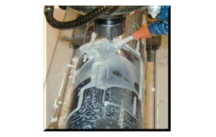

Our machine-sharpened, truly hardened rotary dies were built to last and created for abrasive, tight tolerances and long-run applications. And they deliver the exceptional performance you expect from Wilson!
WHY MACHINE-SHARPENED MEANS GREATER PRODUCTIVITY.
Since the onset of rotary die cutting, steel rolls were milled to form blades then hand-sharpened for cutting purposes. While this was considered the best option at the time, this practice also produced inconsistent results. Today, Wilson rotary dies are the result of the latest and most advanced technology, yielding footage and tolerances once thought impossible. In 1999, our first fully machine-finished prototype die was shipped for the job of converting Compucal film. Compared to dies made from traditional methods, the new tooling’s output more than doubled, marking the beginning of a new era for rotary die cutting.
Premium steels, 21st century CNC equipment, high-tech steel hardening processes, cryogenic treatments, machine sharpening and life-extending coatings. When it comes to rotary dies, that's the Wilson recipe for performance and customer satisfaction.
AVAILABLE STEEL TYPES:
-
The HT45 die is used strictly for short run pressure-sensitive applications.
-
The M80 die is designed for both short run metal-to-metal and long run pressure-sensitive applications. Compared to HT45 steel, this steel achieves a greater level of hardness making it the perfect choice for long runs!
-
The Elite die is designed for medium to long runs on abrasive substrates.
-
The S100 die steel is fully-hardened tool steel designed for metal-to-metal and pressure-sensitive applications. This steel has a greater level of hardness than the M80 steel.
-
The M80 Cryo die offers the same high quality as M80 steel with the addition of the cryogenic treatment. That’s why it’s a real workhorse for long runs converting thin films.
-
The T1000 die offers the longest life available on abrasive materials such as thermal transfer and Compucal.
Please contact your Wilson representative for additional information on these products or steel types.

Machine-finished dies are available for both pressure-sensitive and metal-to-metal applications including booklet dies, vacuum insert dies, air-eject dies, spring plunger dies and male/female box dies.